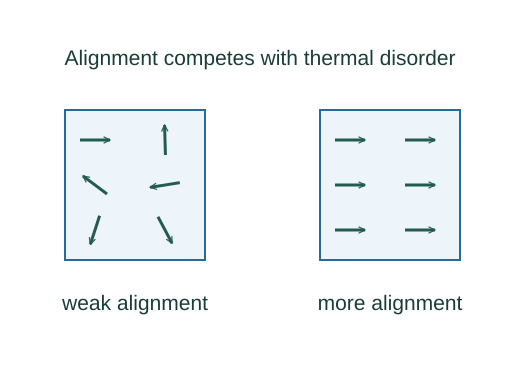

Derive Curie’s law in the weak-field dipole model
Add the magnetic moments and divide by sample volume. Complete alignment gives Mmax = nμ.
What the symbols mean
n: dipoles per volume; μ: permanent dipole magnitude; M: magnetization; θ: angle between dipole and field; b = μB/(kBT).
When this applies
Independent classical dipoles in equilibrium with weak field b ≪ 1. Quantum dipoles change the coefficient; interacting ferromagnets need a different theory.
Developing the argument

Define magnetization
Add the magnetic moments and divide by sample volume. Complete alignment gives Mmax = nμ.
Weight orientation energy
The dipole energy is −μB cos θ, so the equilibrium orientation weight is exp(b cos θ). Spherical orientation counting contributes sin θ dθ.
Expand the weak-field weights
Replace exp(bu) by 1 + bu. The odd integral in the numerator vanishes, leaving b∫u²du = 2b/3; the denominator is approximately 2.
Multiply by dipole density
The aligned average component is μ⟨cos θ⟩ per dipole. This yields M = CB/T with classical C = nμ²/(3kB).
A worked example
At fixed weak B, doubling absolute temperature halves this model’s magnetization.
Derivation behind this calculation ↗A point to keep straight
Curie’s constant depends on microscopic moments and quantum state counting; the classical coefficient is not universal.
Check the assumptions and derivation ↗